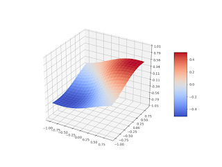

In this post we illustrate the normal spline interpolation method with a few simple examples.
Let's there is the following information of a smooth function $\varphi (x,y), \, (x,y) \in R^2$:
\[\begin{aligned}
\tag{1}
& \varphi (0, 0) = 0 \, ,
\\
& \frac{ \partial{\varphi} }{ \partial{x} } (0, 0) = 1 \, ,
\\
& \frac{ \partial{\varphi} }{ \partial{y} } (0, 0) = 1 \, ,
\end{aligned}\]
and it is necessary to reconstruct $\varphi$ using this data.
We assume this function is an element of the Bessel Potential space $H^{2.5}_\varepsilon (R^2)$, thereby it can be treated as a continuously differentiable function. We construct a normal spline $\sigma_1^{(2.5)}$ approximating $\varphi$:
\[\begin{aligned}
\sigma_1^{(2.5)} = {\rm arg\,min}\{ \| \varphi \|^2_{H^{2.5}_\varepsilon} : (1), \ \forall \varphi \in {H^{2.5}_\varepsilon} (R^2) \} \, .
\end{aligned}\]
This spline can be presented as
\[\sigma_1^{(2.5)} = \mu_1 h_1 + \mu'_1 h'_1 + \mu'_2 h'_2 \, ,\]
here
\[\begin{aligned}
& h_1 (\eta_1, \eta_2, \varepsilon) = \exp (-\varepsilon \sqrt{\eta_1^2 + \eta_2^2}) (1 + \varepsilon \sqrt{\eta_1^2 + \eta_2^2}) \, ,
\\
& h'_1 (\eta_1, \eta_2, \varepsilon) = \varepsilon^2 \exp (-\varepsilon \sqrt{\eta_1^2 + \eta_2^2}) (\eta_1 + \eta_2) \, ,
\\
& h'_2 (\eta_1, \eta_2, \varepsilon) = h'_1 (\eta_1, \eta_2, \varepsilon) \, , \ (\eta_1, \eta_2) \in R^2 \, ,
\end{aligned}\]
and coefficients $(\mu_1, \mu'_1, \mu'_2)$ are defined from the system:
\[\begin{bmatrix}
1 & 0 & 0 \\
0 & 2\varepsilon^2 & 0 \\
0 & 0 & 2\varepsilon^2 \\
\end{bmatrix} \left[ \begin{array}{c} \mu_1 \\ \mu'_1 \\ \mu'_2 \end{array} \right] =
\left[ \begin{array}{c} 0 \\ 1 \\ 1 \end{array} \right] \, .\]
Eventually
\[\sigma_1^{(2.5)} (x, y, \varepsilon) = \exp (-\varepsilon \sqrt{x^2 + y^2}) (x + y) \, , \quad (x,y) \in R^2.\]

Fig.1 Spline $\sigma_1^{(2.5)}, \, \varepsilon = 1$

Fig.2 Spline $\sigma_1^{(2.5)}, \, \varepsilon = 0.1$
Now let function $\varphi (x,y), \ (x,y) \in R^2$ is a twice continuously differentiable function which satisfies constraints:
\[\begin{aligned}
\tag{2}
& \varphi (0, 0) = 0 \, ,
\\
& \frac{ \partial{\varphi} }{ \partial{x} } (0, 0) + \frac{ \partial{\varphi} }{ \partial{y} } (0, 0) = 2 \, .
\end{aligned}\]
We approximate it by constructing a normal spline $\sigma_1^{(3.5)}$ in $H^{3.5}_\varepsilon (R^2)$:
\[\begin{aligned}
& \sigma_1^{(3.5)} = {\rm arg\,min}\{ \| \varphi \|^2_{H^{3.5}_\varepsilon} : (2), \ \forall \varphi \in {H^{3.5}_\varepsilon} (R^2) \} \, , \\
& \sigma_1^{(3.5)} = \mu_1 h_1 + \mu'_1 h'_1 \, ,
\end{aligned} \]
where
\[\begin{aligned}
& h_1 (\eta_1, \eta_2, \varepsilon) = \exp (-\varepsilon \sqrt{\eta_1^2 + \eta_2^2}) (3 + 3\varepsilon \sqrt{\eta_1^2 + \eta_2^2} + \varepsilon^2 (\eta_1^2 + \eta_2^2)) \, ,
\\
& h'_1 (\eta_1, \eta_2, \varepsilon) = \varepsilon^2 \exp (-\varepsilon \sqrt{\eta_1^2 + \eta_2^2}) (1 +\varepsilon \sqrt{\eta_1^2 + \eta_2^2}) (\eta_1 + \eta_2) \, ,
\end{aligned} \]
and coefficients $(\mu_1, \mu'_1)$ are defined from the system:
\[\begin{bmatrix}
3 & 0 \\
0 & 2\varepsilon^2 \\
\end{bmatrix} \left[ \begin{array}{c} \mu_1 \\ \mu'_1 \end{array} \right] =
\left[ \begin{array}{c} 0 \\ 2 \end{array} \right] \, .\]
Therefore
\[\begin{aligned}
& \sigma_1^{(3.5)} (x, y, \varepsilon) = \exp (-\varepsilon \sqrt{x^2 + y^2}) (1 + \varepsilon \sqrt{x^2 + y^2}) (x + y) \, ,
\\
& (x,y) \in R^2.
\end{aligned}\]
As the last example consider a problem of reconstructing a continuously differentiable function $\varphi (x), \ x \in R$, which satisfies constraint
\[\tag{3}
\frac {d\varphi} {dx} (0) = 1 \, ,\]
and it is closest to function $z(x) = 2 x, \, x \in R$. We approximate it by constructing a normal spline $\sigma_1^{(2)}$ in $H^{2}_\varepsilon (R)$:
\[\begin{aligned}
& \sigma_1^{(2)} = {\rm arg\,min}\{ \| \varphi - z \|^2_{H^{2}_\varepsilon} : (3), \ \forall \varphi \in {H^{2}_\varepsilon} (R) \} \, ,
\\
& \sigma_1^{(2)} = z + \mu'_1 h'_1 = 2x + \mu'_1 h'_1 \, ,
\end{aligned}\]
Performing calculations analogous to previous ones, we'll receive:
\[\sigma_1^{(2)} (x, \varepsilon) = 2 x - x \exp (-\varepsilon |x|) \, , \quad x \in R.\]